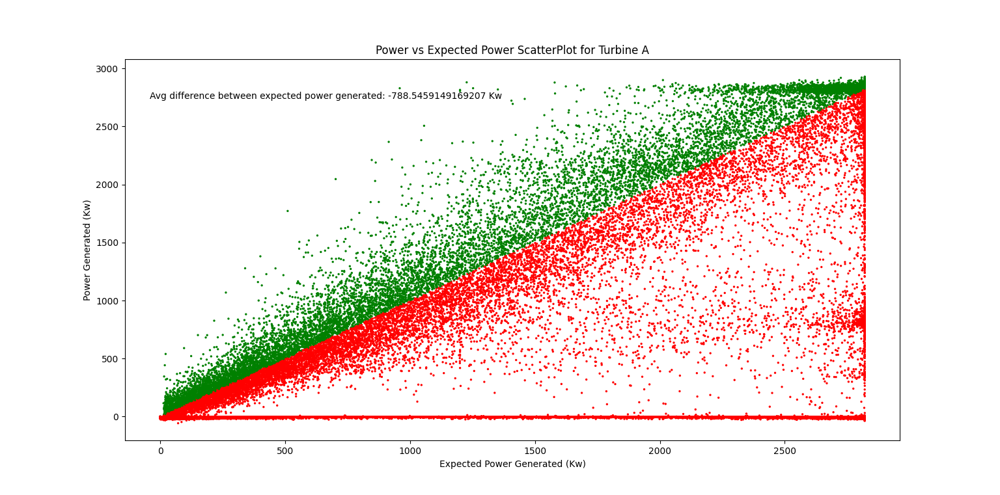

Analysis
From an analysis of the data, we found the wind turbine A, B, D, H, and J were faulty while turbine C, E, F, G, and I were fully functional.
To identify the faulty wind turbines, the group looked at which turbines had the smallest average difference in power generated vs its expected
power generator. This is shown in the graphs below.

To find out what was causing the errors, the group first looked at the downtime graphs for the turbines. The group determmined
that turbine A, B, and J experienced significantly more downtime compared to the other turbines. This was a major issue and contributed
to significantly less power production compared to the other motors.
Another contributing factor to the power loss of turbines was the average component temperature. When looking at the charts created,
D has a spike in average component temperature compared to the others which could cause the power loss observed.
Additionally, vibrations tend to have a very significant impact on the power loss of the different turbines. When observing the chart of
vibrations, A, B, D, H, and J had higher vibrations compared to C, E, F, G, and I. This indicates that there is a high correlation between
power output and vibrations.
Finally, the group analyzed the wind speeds and rotor speeds of the different tubines. Overall, each rotor had a relatively consistent
wind speed measured. Despite this, rotor A, B, D, and H have significantly lower rotor speeds than the others. This signifies
that rotor speed is highly correlated with power generation.